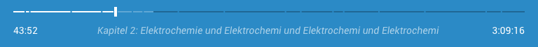

Podlove Web Player v4
Funktionen, Architektur und Ausblick
Über Mich
Alexander Heimbuch
- UI Developer @Salesforce
- Eigentlich was mit Medien studiert
- Fetisch für JavaScript Frameworks
Podcasts im Browser
Gretchenfrage
Nutzungsszenarien
- Mobil: langfristig und passiv
- Browser: kurzfristig und explorativ
Webplayer als Werkzeug
- Effiziente Exploration
- Sharing
- Live Streams
- Enablement
- Tech Demo
Konzept
von Markus Stuhr
Basiskonzept
Kurz Beschreibung
Player Controls

Track Controls
Tabs
Architektur
Zustandsmaschine
Aktion
+
Zustand
=
Zustand*
Features
Theming, Kapitel, Embedding & mehr
Responsivität
Theming